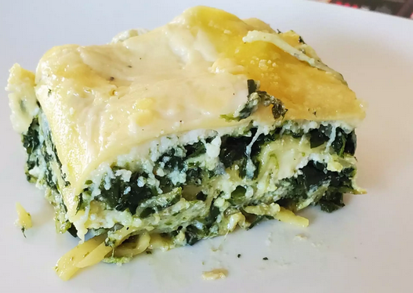

Pesto Lasagna Recipe

A finished dish of Pesto Lasagna
- 16 oz package lasagna noodles
- 2 tablespoons olive oil
- 1 small onion, chopped
- 16 oz package frozen chopped spinach, thawed
- 7 oz basil pesto
- 30 oz ricotta cheese
- 1 egg
- ½ teaspoon salt
- ¼ teaspoon ground black pepper
- ¼ teaspoon ground nutmeg
- 2 cups mozzarella cheese, shredded
- 9 oz Alfredo-style pasta sauce
- ¼ cup grated Parmesan cheese
Directions
- Preheat the oven to 350° F (175° C).
- Bring a large pot of lightly salted water to a boil Add lasagna and cook for 8 to 10 minutes or until al dente and drain.
- In large skillet over medium heat, sauté onion in olive oil until tender. Stir in spinach; remove from heat and stir in pesto.
- In a large bowl, mix ricotta cheese, egg, salt, pepper, and nutmeg.
- In a 3-quart greased baking dish, layer noodles, then spinach mixture, followed by ricotta mixture. Sprinkle with mozzarella cheese. Repeat the layers ending with noodles o n top. Spread Alfredo sauce on top of noodles and sprinkle with Parmesan cheese.
- Cover with foil and bake in the preheated oven for 45 to 55 minutes or until done.